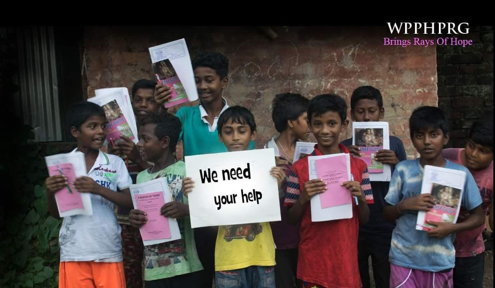
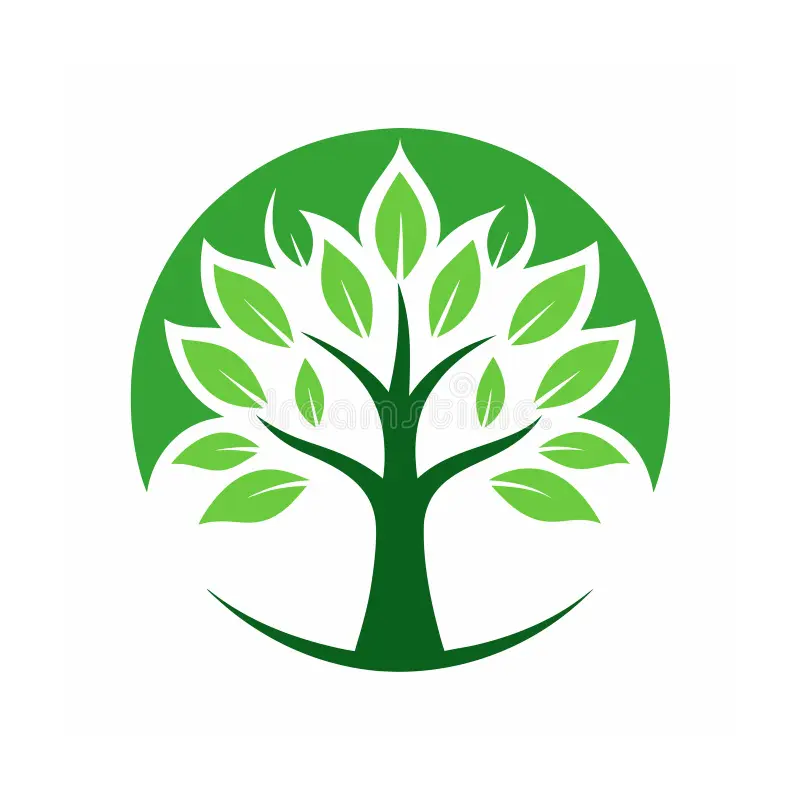
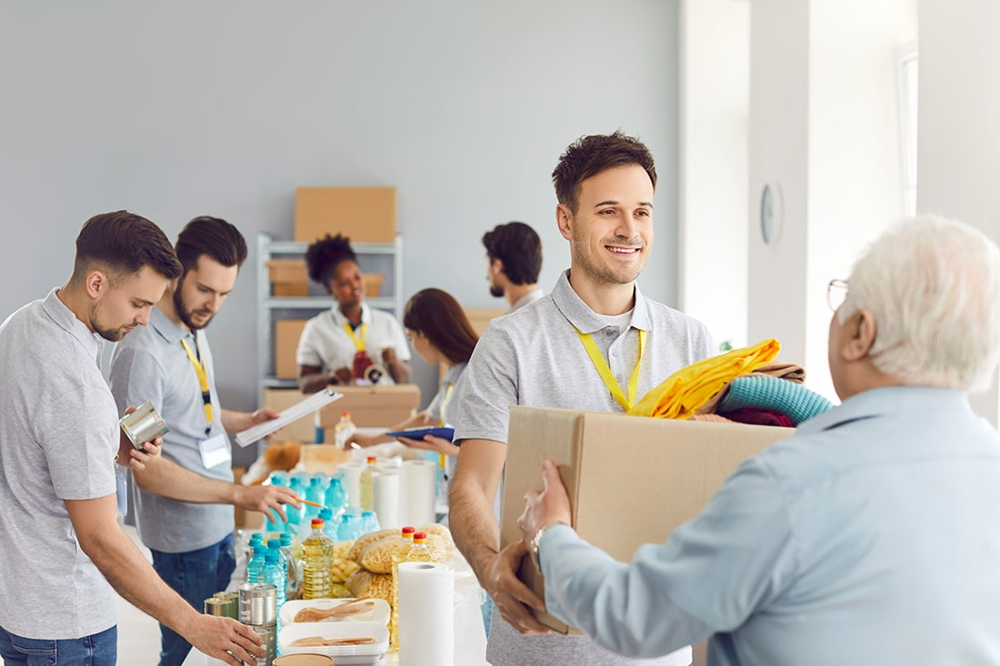
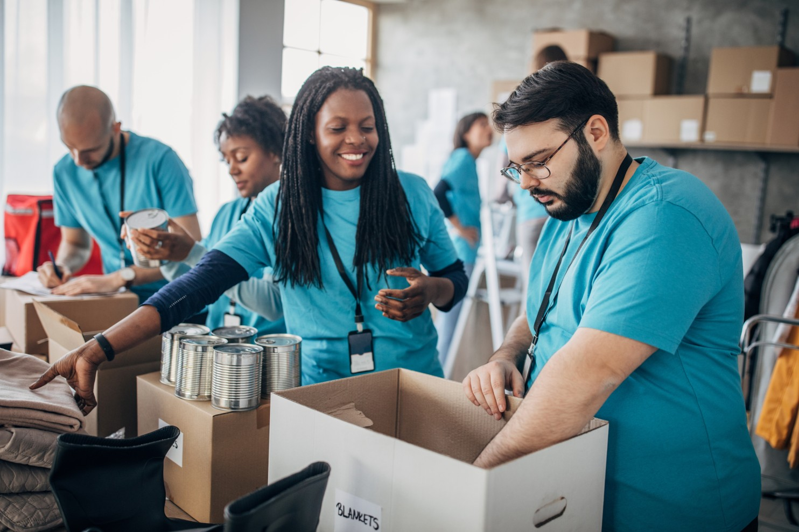
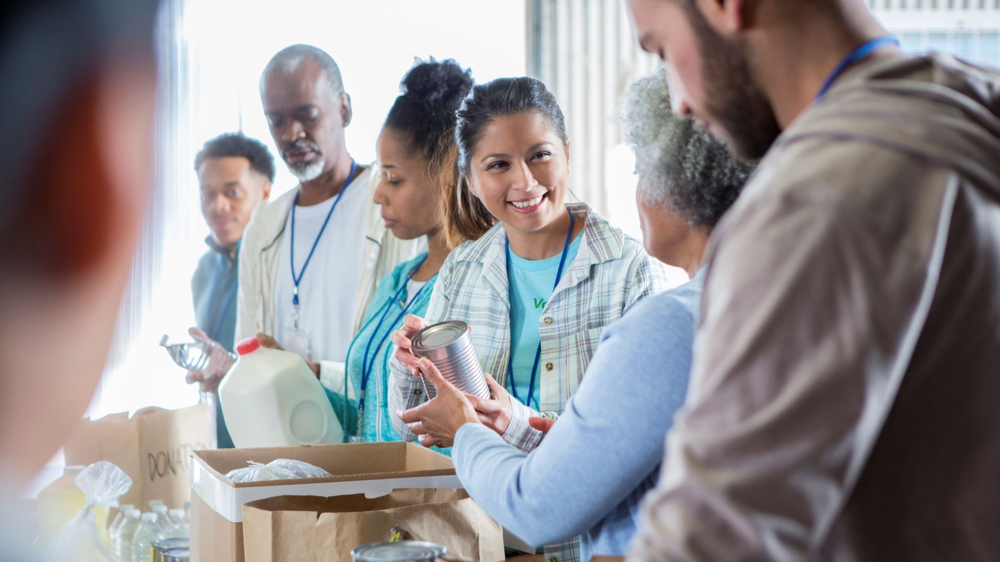
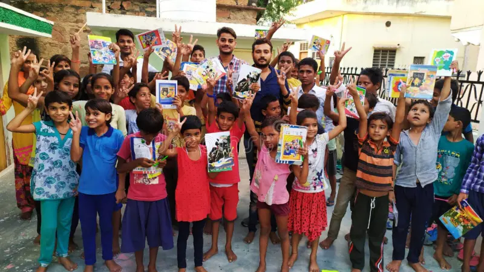
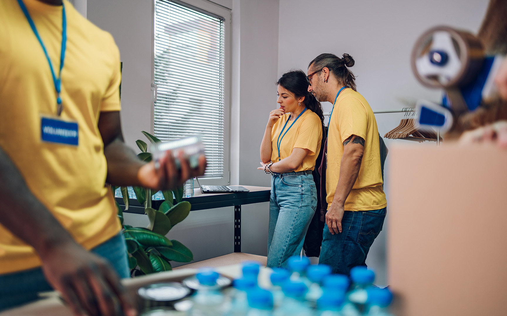
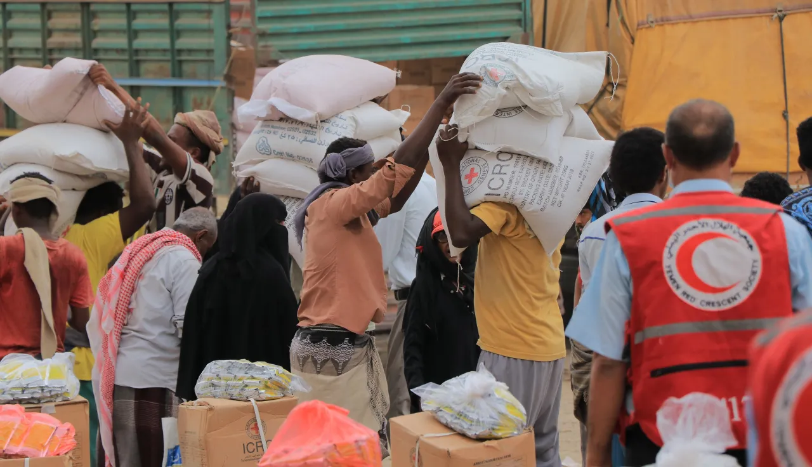
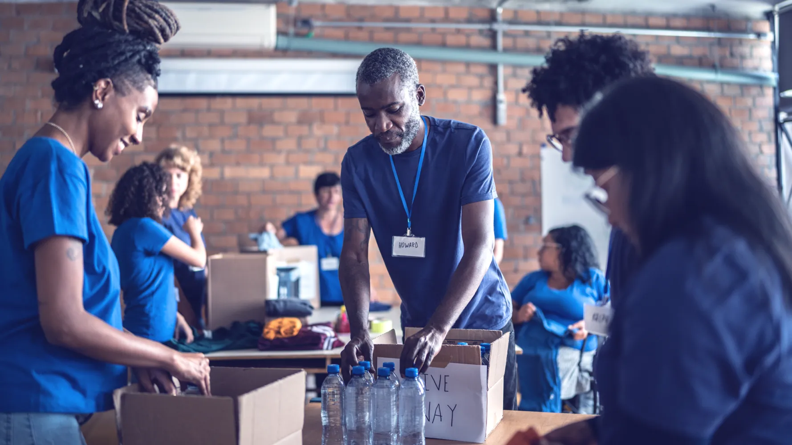
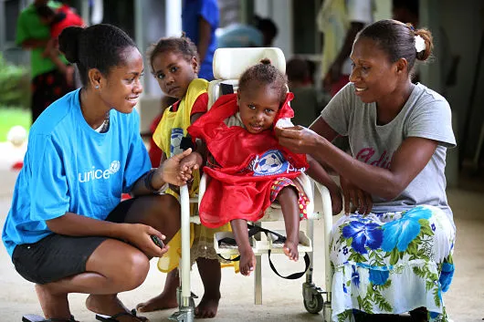

Education
Learning Support
School supplies, tutoring circles, reading sessions, and mentoring for children who need extra encouragement.

GreenTree Foundation
Programs
GreenTree Foundation brings education, essentials, wellbeing, and volunteer action into one joined-up support system for communities under pressure.

Core support
Inspired by the clear, product-led flow of the Petit reference, each GreenTree program is presented like a practical support tool families and partners can understand at a glance.

School supplies, tutoring circles, reading sessions, and mentoring for children who need extra encouragement.
Nutritious food parcels, hygiene products, clothing, and household basics delivered through local partners.

Referrals, wellbeing events, disability support, and trusted information for people navigating care systems.
Local volunteers help with packing days, outreach, mentoring, fundraising, and community events.


Always connected
Every project starts with a clear local request, then moves through planning, delivery, and impact reporting so support stays transparent from start to finish.
Why GreenTree programs work
Families often need connected support. Our programs combine practical relief with education, wellbeing, and volunteer time so no one has to navigate every challenge alone.
Join the Work


Because every family matters
Your donation or volunteer time keeps school support, essentials, wellbeing access, and community action moving.